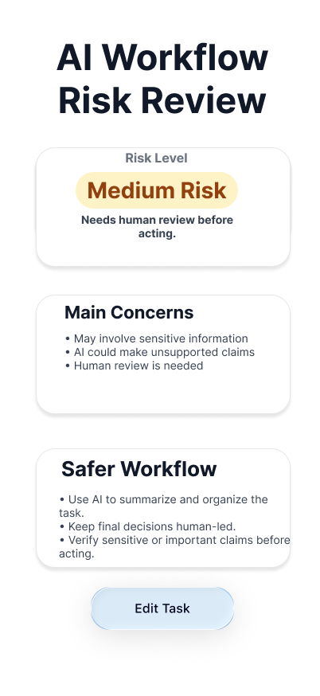

AI Workflow Risk Review Tool
A Streamlit web app that evaluates AI-assisted tasks for privacy, decision impact, accuracy, and automation risks, then recommends a safer workflow with human review.
Python • Streamlit • Figma • Rule-Based Scoring
View on GitHub